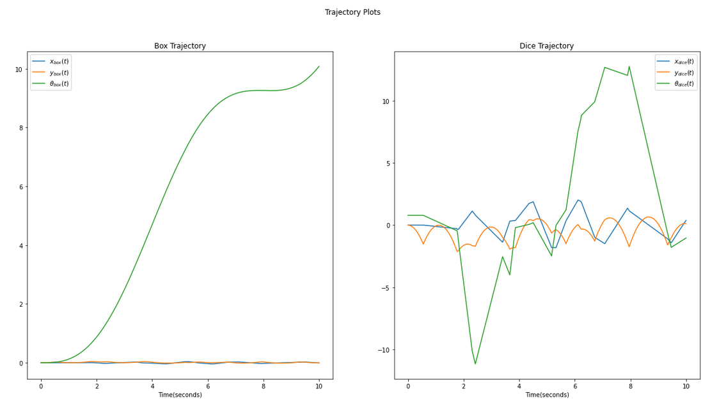

Dice in a Cup Simulation
Overview
In this project a 2D planar silmulation of a die bouncing inside a box is created, where the both the bodies have 6 degrees of freedom. The box is experiencing an external force (causing it to rotate) while the die is free falling in gravity, causing the die to collide against the walls of the box and bounce. The figure below demonstrates the trajectory of the box and the die.
Calculations
- Frames defined:
- w: World frame
- b: Box/Cup frame
- d: Dice frame
- Euler-Lagrange Equations:
- Constraints and External Forces:
- Impact:
The following frames were defined as shown in the figure:
The rotational kinetic energy for the box and the die wascalculated with the body velocities of the box and the dice along with their respective inertia tensors, as shown in the equation. The Lagrangian was calculating by taking the difference between this rotational kinetic energy and the potential energy of the system. This Lagrangian is the LHS of the Euler Lagrange equation. The external force matrix is the RHS.
No constraints were added to the system as the impact conditions take care of the main constraint, i.e the dice should be within the box. An external torque and a force was applied on the box in the y direction to counteract the force by gravity in the -y direction.
There were 16 impact conditions which considered impact between each corner of the dice with every side of the box (in the x and y coordinates). Figure above shows the 4 coordinates of the dice and their frames. Each corner of the dice with respect to the box {B} frame will experience impact when it is at (length of the box)/2 in any of the 4 directions from {B} frame.The equation shown was compute the impact equation.
Know more about this project at this github link .
- © Untitled
- Design: HTML5 UP